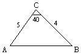
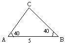
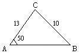

解三角形(III)
程式由網友 八月 提供。
更新日期: 2014年9月9日
程式可解一個三角形，計算內容與程式正弦、餘弦定律及三角形面積相同， 不過使用者不用對正弦及餘弦定律有任何認識，只要輸入三角形的三邊及三邊其中三個資料(最少要輸入一邊資料)，答案會依照輸入變數次序會顯示三邊的長度(即是輸入的是邊就直接是輸出該邊，如果輸入的是角輸出就是其對應的邊，如果有一組已知邊及角，由於兩者都是代表同一邊，最後輸入的角/邊就決定了第二個輸出的邊)。
要注意要以下的形式輸入三個已知變數:
首先查看已知三個變數中有沒有一組己知邊及己知角為對應關係，
(a)如果有，請先以負值輸入這己知邊，再以負值輸入對應的己知角，最後餘下的變數，邊以正值輸入邊，而角以負值輸入。
(b)如果沒有，請先以正值輸入所有已知邊，餘下的(如有)以負值輸入己知角。
注意: πr 是按 Shift EXP Shift Ans 2。
程式一 (163 bytes)
?→A : ?→B : ?→C: MM- : While A<0: -A→A :
C>0M+ => sin-1(CA-1sin(B→C
: C→D : -πr - B - C→C :
D→B : WhileEnd : B<0 => Asin(B)÷sin(B+C→B : 1 :
While Ans: C<0 => Pol( B - A cos( C , A sin( C→C
:
A◢ B◢ C◢ cos-1( (B2 + C2
- A2) ÷ ( 2BC→D◢
cos-1( A-1(C - B cos( D→X◢ πr - D - X→Y◢
. 5BC sin( D◢ MX>DM- => D-X→C: WhileEnd
程式二 (154 bytes，較短但較慢一點)
?→A : ?→B : ?→X: MM- : While A<0: -A→A :
X>0M+ => sin-1(XA-1sin(B→X : X→D : -πr
- B - X→X :
D→B : WhileEnd : B<0 => Asin(B)÷sin(B+X→B :
X>0 => cos-1( (A2 + B2
- X2) ÷ ( 2AB→X : Abs(X→D :
While Ans: A◢ B◢ Pol( B - Acos(D , Asin(D◢ Y◢
πr - D - Y→C◢ D ◢ . 5BX sin(Y◢ MC>YM- => C-Y→D: WhileEnd
註1: 最少要有三個已知變數(邊或角)及最少包括一已知邊，否則無法計算。
註2: 輸入的資料若不能構成三角形，則會出現異常結果(例如: 0，負數，角度大於或等於180o，Math ERROR)。
註3: 若多於三個己知變數，可任意選取其中三個已知變數輸入，但要注意有可能出現兩組解答(ASS情況)，若出現這種情況，其中一組不是要找的答案，請用未輸入的已知變數核對清楚那組答案是 否正確。
註4: 角的資料以負值形式輸入，邊的資料若有已知對應角存在請以負值輸入，否則邊以正值輸入。
註5: 程式一計算完結後按 RCL A, RCL B, RCL C, RCL D, RCL X, RCL Y 可依次序再顯示三邊及三角 ，若有兩組解答只再顯示第二組解答(如要提取第一組記憶請在顯示時第一組面積時按AC終止程式即可)。程式二計算完結後按 RCL A, RCL B, RCL X, RCL Y, RCL C, RCL D 可依次序再顯示三邊及三角 ，若有兩組解答只再顯示第二組解答(如要提取第一組記憶請在顯示時第一組面積時按AC終止程式即可)。
註6: 計算完結後會顯示0，若顯示整個三角形資料後出現非0的數值，表示有另一個可能的三角形存在(第二組解答)。
註7: 如果是使用fx-3650P II或fx-50FH II，上述兩個程式中紫色的開括號 ( 可以省略，程式長度可減1 byte。
例題1: a=4, b=5, c=6，求∠A、∠B、∠C及三角形面積。
注意:要在DEG Mode執行
按 Prog 1 再按 4 EXE 5 EXE 6 EXE (顯示a為4)
EXE (顯示b為5) EXE (顯示c為6)
EXE (顯示∠A=41.410o) EXE (顯示∠B=55.771o)
EXE (顯示∠C=82.8192o) EXE (顯示面積為9.9216)
EXE (顯示WhileEnd及0表示計算完結)
例題2: a=4, b=5, ∠C=40o ，求∠A、∠B、c及三角形面積。

注意:要在DEG Mode執行
按 Prog 1 再按 4 EXE 5 EXE - 40 EXE (顯示a為4)
EXE (顯示b為5) EXE (顯示c為3.2184)
EXE (顯示∠A=53.024o) EXE (顯示∠B=86.976o)
EXE (顯示∠C=40o) EXE (顯示面積為6.4279)
EXE (顯示WhileEnd及0表示計算完結)
例題3: ∠A = 40o, c = 5, ∠B = 40o，求 a、b、∠C及三角形面積。

注意:要在DEG Mode執行
按 Prog 1 再按 5 EXE - 40 EXE - 40 EXE (顯示c為 5)
EXE (顯示a為 3.2635) EXE (顯示b為 3.2635)
EXE (顯示∠C為100o) EXE (顯示∠A為40o)
EXE (顯示∠B為40o) EXE (顯示面積為5.2444)
EXE (顯示WhileEnd及0表示計算完結)
例題4: ∠A = 40o，a = 5，∠B = 60o，求b，∠C及c。

注意:要在DEG Mode執行
按 Prog 1 再按 - 5 EXE - 40 EXE - 60 EXE (顯示a為5)
EXE (顯示b為6.7365) EXE (顯示c為7.6604)
EXE (顯示∠A為 40o) EXE (顯示∠B為 60o)
EXE (顯示∠C為 80o) EXE (顯示面積為16.5853)
EXE (顯示WhileEnd及0表示計算完結)
例題5: ∠A = 150o，a = 10，b = 6，求∠B，∠C及c。

注意:要在DEG Mode執行
按 Prog 1 再按 - 10 EXE - 150 EXE 6 EXE (顯示a為10)
EXE (顯示b為6) EXE (顯示c為4.3432)
EXE (顯示∠A為 150o) EXE (顯示∠B為17.4576o)
EXE (顯示∠C為 12.5424o) EXE (顯示面積為6.51486)
EXE (顯示WhileEnd及0表示計算完結)
例題6: ∠A = 50o，a = 10，b = 13，求∠B，∠C及c。

注意:要在DEG Mode執行
按 Prog 1 再按 -10 EXE -50 EXE 13 EXE (顯示a為10)
EXE (顯示b為13) EXE (顯示c為9.2655)
EXE (顯示∠A為 50o) EXE (顯示∠B為84.7832o)
EXE (顯示∠C為 45.2168o) EXE (顯示面積為46.1355)
EXE (程式未終止及顯示另一組答案，a為10)
EXE (顯示b為13) EXE (顯示c為7.44699)
EXE (顯示∠A為 50o) EXE (顯示∠B為95.2168o)
EXE (顯示∠C為 34.7832o) EXE (顯示面積為37.0807)
EXE (顯示WhileEnd及0表示計算完結)
返回 CASIO fx-50FH、fx-3650P II、fx-50FH II及fx-50F PLUS 程式集